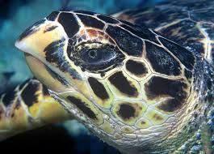
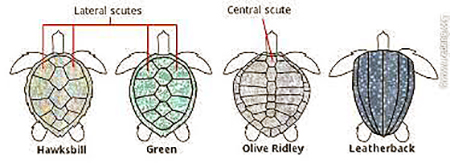

The hawksbill sea turtle (Eretmochelys imbricata) is a critically endangered sea turtle belonging to the family Cheloniidae. It is the only extant species in the genus Eretmochelys. The species has a worldwide distribution, with Atlantic and Indo-Pacific subspecies—E. i. imbricata and E. i. bissa, respectively.
The hawksbill's appearance is similar to that of other marine turtles. In general, it has a flattened body shape, a protective carapace, and flipper-like limbs, adapted for swimming in the open ocean. E. imbricata is easily distinguished from other sea turtles by its sharp, curving beak with prominent tomium, and the saw-like appearance of its shell margins. Hawksbill shells slightly change colors, depending on water temperature. While this turtle lives part of its life in the open ocean, it spends more time in shallow lagoons and coral reefs. The World Conservation Union, primarily as a result of Human fishing practices, classifies E. imbricata as critically endangered.[1] Hawksbill shells were the primary source of tortoiseshell material used for decorative purposes. The Convention on International Trade in Endangered Species outlaws the capture and trade of hawksbill sea turtles and products derived from them.Adult hawksbill sea turtles typically grow to 1 m (3 ft) in length, weighing around 80 kg (180 lb) on average. The heaviest hawksbill ever captured weighed 127 kg (280 lb).The turtle's shell, or carapace, has an amber background patterned with an irregular combination of light and dark streaks, with predominantly black and mottled-brown colors radiating to the sides.
Several characteristics of the hawksbill sea turtle distinguish it from other sea turtle species. Its elongated, tapered head ends in a beak-like mouth (from which its common name is derived), and its beak is more sharply pronounced and hooked than others. The hawksbill's forelimbs have two visible claws on each flipper.
One of the hawksbill's more easily distinguished characteristics is the pattern of thick scutes that make up its carapace. While its carapace has five central scutes and four pairs of lateral scutes like several members of its family, E. imbricata's posterior scutes overlap in such a way as to give the rear margin of its carapace a serrated look, similar to the edge of a saw or a steak knife. The turtle's carapace has been known to reach almost 1 m (3 ft) in length. The hawksbill appears to frequently employ its sturdy shell to insert its body into tight spaces in reefs.
Crawling with an alternating gait, hawksbill tracks left in the sand are asymmetrical. In contrast, the green sea turtle and the leatherback turtle have a more symmetrical gait.
Due to its consumption of venomous cnidarians,(includes corals, hydras, jellyfish, Portuguese men-of-war, sea anemones, sea pens, sea whips, and sea fans) hawksbill sea turtle flesh can become toxic.
The hawksbill sea turtle has been shown to be biofluorescent and is the first reptile recorded with this characteristic. It is unknown if this is derived from the turtle's diet, which includes biofluorescent organisms like the hard coral Physogyra lichtensteini. Males have more intense pigmentation than females, and a behavioural role of these differences is speculated.